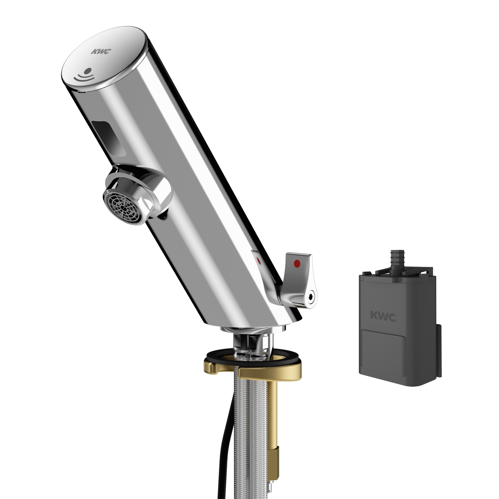

KWC Aquarotter GmbH
F3E-Mix Elektronik-Standbatterie mit Batteriefach
F3EM1001 - 2030033388
F3E-Mix Standbatterie DN 15 für Waschanlagen, opto-elektronisch gesteuert. Zum Anschluss an Warmund Kaltwasser mittels Schläuchen mit integrierten Rückflussverhinderern und Sieben. Steuerelektronik, Magnetventilkartusche und Sensor im Ganzmetallgehäuse, Messing poliert verchromt, mit Temperaturwahlhebel und einstellbarem, verdrehsicherem Temperaturanschlag.
Kontakt
Parkstraße 1-5 | 14974 Ludwigsfelde | Deutschland
Telefon +49 3378 818455 | kwc-info.de@kwc.com